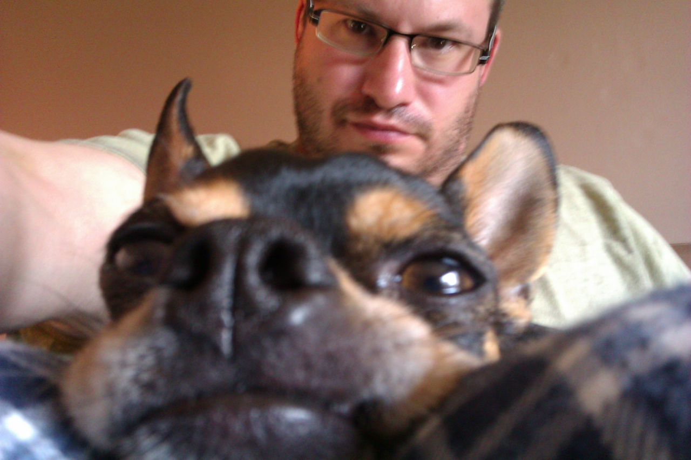

Welcome to my Webpage :)
 Email Mike Download My ResumeMy name is Michael Helgeson. I am from Minnesota. I have been a UAT software tester for over 18 years. I am currently taking SQL classes. I like to build, fix and troubleshoot (Unix, Windows and Linux) computers as a hobby. My goal is to acquire the position of UAT / Quality Engineer software tester. I am a demonstrated self-starter with a strong work ethic and positive attitude, excelling at coordinating multiple projects. I am dependable and well organized as well as a team player that can work with minimal supervision. I have over eighteen years of experience in the information systems field of User Acceptance Testing (QA/UAT). I have extensive experience in quality assurance including implementing test processes and procedures, developing and implementing testing plans, testing web and client/server and Java applications. I am self-starter with a strong work ethic and a positive attitude. I excel at coordinating multiple projects. I am a good listener, I am honest, dependable, hard-working, I'm able to meet deadlines, I'm well organized, detail-orientated, quick learner, a team player, I keep a positive attitude, and I can work with minimal supervision. Some skill I have acquired are: I am competent in Agile Processes and CA Rally Tools. I'm very knowledgeable with several computer operating systems ( Unix, Windows, and Linux ). I build, troubleshoot and fix computers both hardware and software. I also have knowledge with ALM / HP Quality Center (Formally Mercury Industries). I also have experience with Microsoft–Excel, Word, Power Point, Outlook, Excel and Visio. I worked on multiple Projects using the Agile Processes and CA Rally Tool.